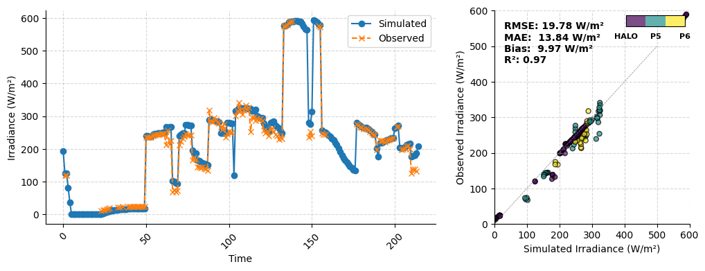
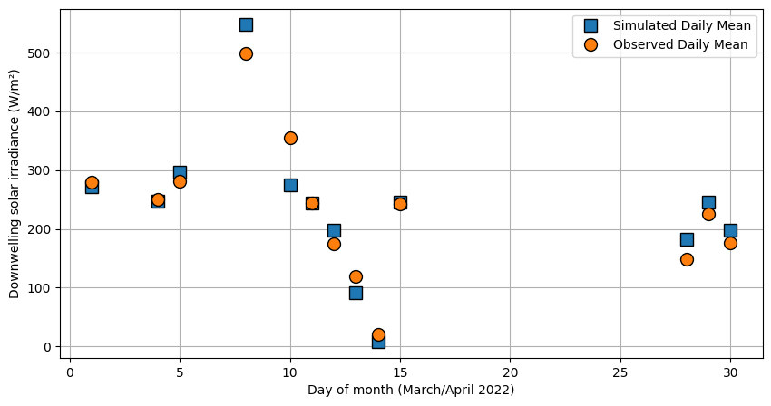
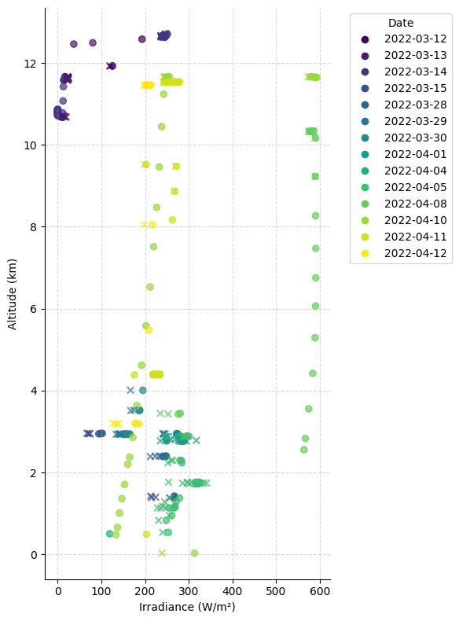
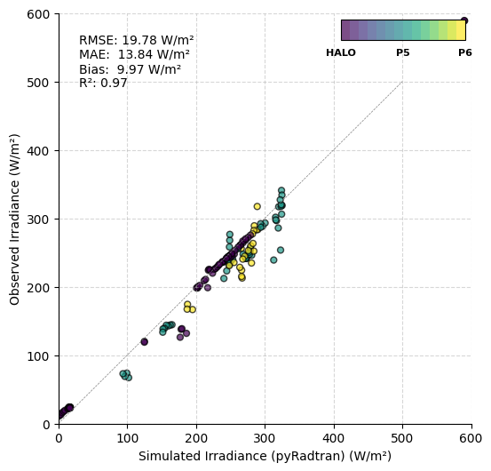
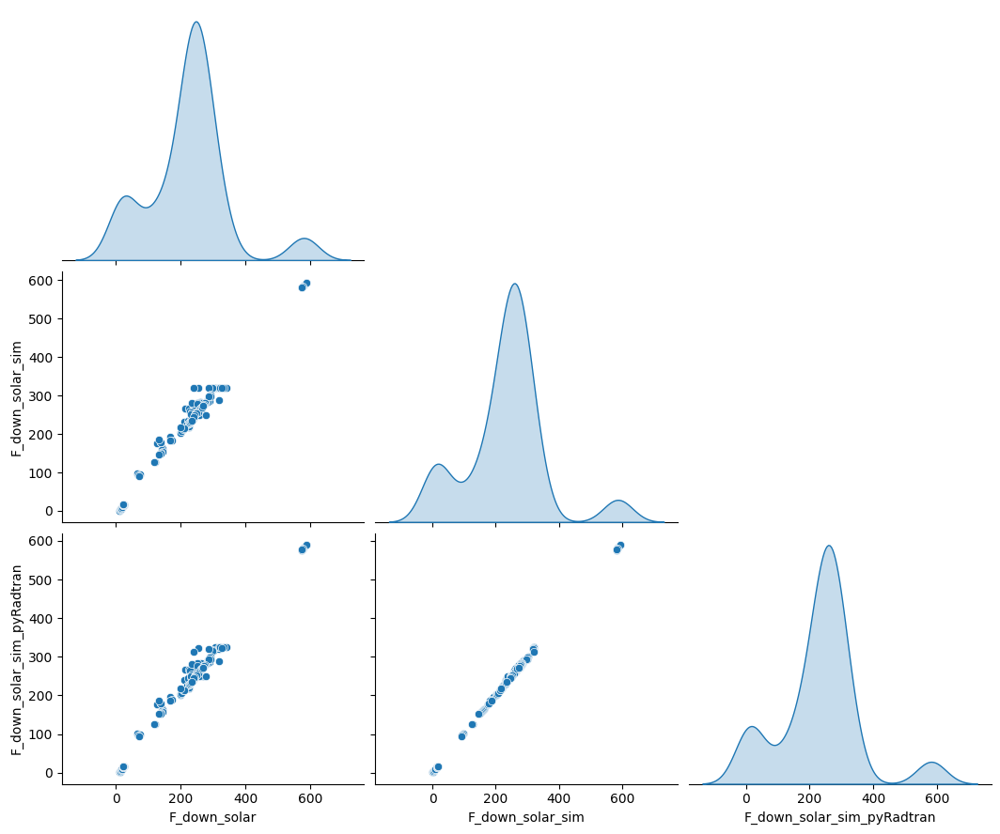

Solar validation against HALO-(AC)³ aircraft measurements#
Compares simulated broadband downwelling solar irradiance with clear-sky measurements from the HALO, P5 and P6 aircraft during HALO-(AC)³, and with the simulations published with the dataset (Becker et al., 2023). The measurements are in data/; the last plot needs seaborn.
Note
The water-vapour and temperature profiles come from HALO-(AC)³ dropsondes, converted to libRadtran radiosonde files (p T RH, one YYYYMMDD_SSSSSSOD.dat file per sonde) in radiosonde/Flight_YYYYMMDD/. These files are not redistributable and are not shipped with pyRadtran. Without them radiosonde/ is empty, no profile is found and the runs fall back to the US standard water-vapour profile.
Setup#
import pyradtran
from pyradtran import Var, load_config
import matplotlib.pyplot as plt
import numpy as np
import xarray as xr
from pathlib import Path
import pandas as pd
import logging
# Configure logging for pyradtran
logging.getLogger('pyradtran').setLevel(logging.CRITICAL)
# ── Simulation parameters ─────────────────────────────────────────────────────
# Paths come from ~/.pyradtran/config.yaml (master config);
# radiosonde_base points to the dropsonde files next to this notebook
cfg = load_config()
cfg.simulation_defaults.rte_solver = "disort"
cfg.simulation_defaults.mol_abs_param = "reptran medium"
cfg.simulation_defaults.source = "solar"
cfg.simulation_defaults.wavelength_nm = [290, 4500]
cfg.simulation_defaults.integrate_wavelength = True
cfg.simulation_defaults.h2o_source = "radiosonde"
cfg.simulation_defaults.ozone_du = None # ozone from the atmosphere file
cfg.simulation_defaults.h2o_mm = None # use radiosonde
cfg.simulation_defaults.surface_temperature_k = 253.15
cfg.simulation_defaults.output_altitudes_km = [0.0]
cfg.simulation_defaults.output_columns = ["zout", "lambda", "sza", "edir", "eglo", "edn", "eup", "enet", "albedo"]
cfg.execution.max_workers = 8
cfg.execution.timeout_seconds = 3600
# Dropsonde profiles (not shipped, see the note above); relative to this notebook.
# For every point the sonde closest in time is used.
cfg.paths.radiosonde_base = "radiosonde"
config_path = Path("config/halo-ac3_bbr_all_aircraft.yaml")
cfg.to_yaml(config_path)
print(f"Config saved to {config_path}")
Config saved to config/halo-ac3_bbr_all_aircraft.yaml
Data preparation#
The flight-level albedo \(F^\uparrow/F^\downarrow\) is used as surface albedo where it was measured and is below 1, otherwise 0.5. The aircraft altitude is a data variable on time, so each point is simulated at its own flight level (How pyRadtran works).
# Load CSV and convert to xarray Dataset
df = pd.read_csv('data/HALO-AC3_HALO_P5_P6_aircraft_broadband_radiation_clear_sky_with_ocean_100s.csv', parse_dates=['time'])
df = df.set_index('time')
ds = xr.Dataset.from_dataframe(df).drop_duplicates('time').sortby('time')
ds_to_sim = ds.rename({'Lat': 'latitude', 'Lon': 'longitude', 'Alt': 'altitude'})
# Use uncorrected solar flux where available
ds_to_sim['F_down_solar'].loc[{'time': ds_to_sim.F_down_solar_uncorr.notnull()}] = ds_to_sim.F_down_solar_uncorr.loc[{'time': ds_to_sim.F_down_solar_uncorr.notnull()}]
# Albedo from the measured upward/downward solar irradiance at flight level
albedo = (ds_to_sim['F_up_solar'] / ds_to_sim['F_down_solar'])
albedo = albedo.where(albedo < 1) # Remove unphysical values > 1
ds_to_sim['albedo'] = ('time', albedo.astype(float).values)
ds_to_sim['albedo'] = ds_to_sim['albedo'].fillna(0.5) # Default albedo for NaN values
# Aircraft altitude (m -> km) as a data variable: one output level per point
ds_to_sim['altitude'] = ds_to_sim['altitude'] / 1e3
Running simulations#
# Broadband simulation at flight level for every point
print("Running broadband simulation...")
ds_sim = ds_to_sim.pyradtran.run(
config_path=config_path,
return_dataset=True,
save_to_file=True,
output_path='data/Simulated_HALO-AC3_HALO_P5_P6_aircraft_broadband_radiation_clear_sky_with_ocean_100s.nc',
params={'albedo': Var('albedo')},
show_progress=False,
)
print("\nSimulation complete!")
ds_sim
Running broadband simulation...
Simulation complete!
<xarray.Dataset> Size: 17kB
Dimensions: (time: 215, altitude: 1)
Coordinates:
* time (time) datetime64[ns] 2kB 2022-03-12T12:03:20 ... 2022-04-12T12...
* altitude (altitude) float64 8B 0.0
Data variables:
sza (time, altitude) float64 2kB 80.93 83.87 83.87 ... 79.7 79.16
edir (time, altitude) float64 2kB 1.832e+05 1.155e+05 ... 1.858e+05
eglo (time, altitude) float64 2kB 1.931e+05 1.251e+05 ... 2.089e+05
edn (time, altitude) float64 2kB 9.927e+03 9.6e+03 ... 2.31e+04
eup (time, altitude) float64 2kB 8.508e+04 8.719e+04 ... 9.944e+04
enet (time, altitude) float64 2kB 1.08e+05 3.795e+04 ... 1.094e+05
albedo (time, altitude) float64 2kB 0.4406 0.6968 0.685 ... 0.7168 0.4761
zout (time) float64 2kB 12.58 11.93 11.92 12.49 ... 3.192 3.189 5.477
status (time) int64 2kB 0 0 0 0 0 0 0 0 0 0 0 0 ... 0 0 0 0 0 0 0 0 0 0 0
Attributes:
generated_by: pyradtran
generation_date: 2026-11-14T14:37:20.513490
pyradtran_version: 0.2.0
history: 2026-11-14T14:37:20: pyradtran 0.2.0 ds.pyradt...
pyradtran_params: {"albedo": "Var(name='albedo')", "zout": "Var(...
pyradtran_libradtran_bin: /opt/libRadtran-2.0.6/bin/uvspec
pyradtran_config: paths: {libradtran_bin: /opt/libRadtran-2.0.6/...
pyradtran_input_example: rte_solver disort ...Solar irradiance: time series and scatter comparison#
ds_sim_alt = ds_sim.isel(altitude=0) # one output level per point (the flight level)
ds_sim_alt
<xarray.Dataset> Size: 17kB
Dimensions: (time: 215)
Coordinates:
* time (time) datetime64[ns] 2kB 2022-03-12T12:03:20 ... 2022-04-12T12...
altitude float64 8B 0.0
Data variables:
sza (time) float64 2kB 80.93 83.87 83.87 85.87 ... 80.02 79.7 79.16
edir (time) float64 2kB 1.832e+05 1.155e+05 ... 1.572e+05 1.858e+05
eglo (time) float64 2kB 1.931e+05 1.251e+05 ... 1.863e+05 2.089e+05
edn (time) float64 2kB 9.927e+03 9.6e+03 ... 2.903e+04 2.31e+04
eup (time) float64 2kB 8.508e+04 8.719e+04 ... 1.335e+05 9.944e+04
enet (time) float64 2kB 1.08e+05 3.795e+04 ... 5.274e+04 1.094e+05
albedo (time) float64 2kB 0.4406 0.6968 0.685 ... 0.7369 0.7168 0.4761
zout (time) float64 2kB 12.58 11.93 11.92 12.49 ... 3.192 3.189 5.477
status (time) int64 2kB 0 0 0 0 0 0 0 0 0 0 0 0 ... 0 0 0 0 0 0 0 0 0 0 0
Attributes:
generated_by: pyradtran
generation_date: 2026-11-14T14:37:20.513490
pyradtran_version: 0.2.0
history: 2026-11-14T14:37:20: pyradtran 0.2.0 ds.pyradt...
pyradtran_params: {"albedo": "Var(name='albedo')", "zout": "Var(...
pyradtran_libradtran_bin: /opt/libRadtran-2.0.6/bin/uvspec
pyradtran_config: paths: {libradtran_bin: /opt/libRadtran-2.0.6/...
pyradtran_input_example: rte_solver disort ...from mpl_toolkits.axes_grid1.inset_locator import inset_axes
import matplotlib.colors as mcolors
fig, (ax, ax_scatter) = plt.subplots(1, 2, figsize=(12, 4), gridspec_kw={'width_ratios': [2, 1]})
# --- Categorical coloring by airplane type ---
airplane_cat = ds_to_sim['airplane'].to_series().astype('category')
airplane_codes = airplane_cat.cat.codes
airplane_types = airplane_cat.cat.categories
n_colors = len(airplane_types)
# --- Time series: simulated vs observed downwelling solar irradiance ---
ax.plot(ds_sim_alt.eglo / 1e3, marker='o', linestyle='-', label='Simulated')
ax.plot(ds_to_sim.F_down_solar, marker='x', linestyle='--', label='Observed')
ax.set_xlabel('Time')
ax.set_ylabel('Irradiance (W/m²)')
ax.legend()
ax.tick_params(axis='x', rotation=45)
# --- Scatter plot: simulated vs observed, colored by aircraft ---
cmap = plt.get_cmap('viridis', n_colors)
scatter = ax_scatter.scatter(
ds_sim_alt.eglo / 1e3, ds_to_sim.F_down_solar,
c=airplane_codes, cmap=cmap, s=25, alpha=0.7, edgecolor='k',
)
ax_scatter.set_xlabel('Simulated Irradiance (W/m²)')
ax_scatter.set_ylabel('Observed Irradiance (W/m²)')
ax_scatter.set_xlim(0, 600)
ax_scatter.set_ylim(0, 600)
ax_scatter.plot(np.arange(0, 600, 100), np.arange(0, 600, 100), color='gray', linestyle='--', linewidth=0.5)
# --- Error metrics ---
from sklearn.metrics import mean_squared_error, r2_score, mean_absolute_error
X = ds_sim_alt.eglo.values / 1000
Y = ds_to_sim.F_down_solar.values
nan_mask = ~np.isnan(X) & ~np.isnan(Y)
X = X[nan_mask]
Y = Y[nan_mask]
rmse = np.sqrt(mean_squared_error(X, Y))
bias = np.mean(X - Y)
r2 = r2_score(X, Y)
mae = mean_absolute_error(X, Y)
stats_text = f'RMSE: {rmse:.2f} W/m²\nMAE: {mae:.2f} W/m²\nBias: {bias:.2f} W/m²\nR²: {r2:.2f}'
ax_scatter.text(0.05, 0.95, stats_text, transform=ax_scatter.transAxes, fontsize=10, verticalalignment='top', fontweight='bold')
# --- Inset colorbar for aircraft categories ---
cax = inset_axes(ax_scatter, width="30%", height="5%", loc='upper right')
norm = mcolors.BoundaryNorm(np.arange(n_colors + 1) - 0.5, n_colors)
cb = fig.colorbar(scatter, cax=cax, orientation='horizontal', ticks=np.arange(n_colors), norm=norm)
cb.set_ticklabels(airplane_types, fontweight='bold')
cb.ax.tick_params(labelsize=8)
cax.tick_params(axis='x', which='both', bottom=False, top=False, labelbottom=True, labeltop=False)
cax.spines[['top', 'right', 'left', 'bottom']].set_visible(False)
# --- Formatting ---
for a in [ax, ax_scatter]:
a.grid(True, linestyle='--', alpha=0.5)
a.spines[['top', 'right']].set_visible(False)

# Daily mean comparison: simulated vs observed
plt.figure(figsize=(10, 5))
(ds_sim_alt.groupby('time.day').mean()['eglo'] / 1000).plot(marker='s', ls='', ms=10, markeredgecolor='k', label='Simulated Daily Mean')
ds_to_sim['F_down_solar'].groupby('time.day').mean().plot(marker='o', ls='', ms=10, markeredgecolor='k', label='Observed Daily Mean')
plt.xlabel('Day of month (March/April 2022)')
plt.ylabel('Downwelling solar irradiance (W/m²)')
plt.legend()
plt.grid()

alt = ds_sim_alt.zout.values # flight level (km)
fig, ax = plt.subplots(1, figsize=(6, 8))
# Convert altitude to km for plotting
ds_to_sim['z'] = ds['Alt'] / 1e3
# Create categorical data for coloring by day
day_cat = ds_to_sim.time.to_series().dt.date.astype('category')
day_codes = day_cat.cat.codes
day_types = day_cat.cat.categories
n_colors = len(day_types)
cmap = plt.get_cmap('viridis', n_colors)
# Scatter plot: simulated irradiance vs altitude
scatter_sim = ax.scatter(ds_sim_alt.eglo.values / 1e3, alt, c=day_codes, cmap=cmap, marker='o', label='Simulated', alpha=0.7)
# Scatter plot: observed irradiance vs altitude
scatter_obs = ax.scatter(ds_to_sim.F_down_solar.values, ds_to_sim.z.values, c=day_codes, cmap=cmap, marker='x', label='Observed', alpha=0.7)
# Date legend
handles = [plt.Line2D([0], [0], marker='o', color='w', markerfacecolor=cmap(i), markersize=8) for i in range(n_colors)]
labels = [d.strftime('%Y-%m-%d') for d in day_types]
ax.legend(handles, labels, title="Date", bbox_to_anchor=(1.05, 1), loc='upper left')
ax.spines[['top', 'right']].set_visible(False)
ax.set_ylabel('Altitude (km)')
ax.set_xlabel('Irradiance (W/m²)')
ax.grid(True, linestyle='--', alpha=0.5)
fig.tight_layout()

Comparing pyRadtran with published results#
pyRadtran against the observations with error metrics, then a pair plot of the observations, the published simulations (F_down_solar_sim) and pyRadtran.
X = ds_sim_alt['eglo']
Y = ds_to_sim['F_down_solar']
fig, ax_scatter = plt.subplots(1, 1, figsize=(6, 6))
# --- Scatter: pyRadtran simulated vs observed irradiance ---
cmap = plt.get_cmap('viridis', n_colors)
scatter = ax_scatter.scatter(X / 1e3, Y, c=airplane_codes, cmap=cmap, s=25, alpha=0.7, edgecolor='k')
ax_scatter.set_xlabel('Simulated Irradiance (pyRadtran) (W/m²)')
ax_scatter.set_ylabel('Observed Irradiance (W/m²)')
n_colors = len(airplane_types)
# 1:1 reference line and axis limits
ax_scatter.set_xlim(0, 600)
ax_scatter.set_ylim(0, 600)
ax_scatter.plot(np.arange(0, 600, 100), np.arange(0, 600, 100), color='gray', linestyle='--', linewidth=0.5)
# Inset colorbar for aircraft categories
cax = inset_axes(ax_scatter, width="30%", height="5%", loc='upper right')
norm = mcolors.BoundaryNorm(np.arange(n_colors + 1) - 0.5, n_colors)
cb = fig.colorbar(scatter, cax=cax, orientation='horizontal', ticks=np.arange(n_colors), norm=norm)
cb.set_ticklabels(airplane_types, fontweight='bold')
cb.ax.tick_params(labelsize=8)
cax.tick_params(axis='x', which='both', bottom=False, top=False, labelbottom=True, labeltop=False)
cax.spines[['top', 'right', 'left', 'bottom']].set_visible(False)
for a in [ax_scatter]:
a.grid(True, linestyle='--', alpha=0.5)
a.spines[['top', 'right']].set_visible(False)
# --- Error metrics ---
nan_mask = ~np.isnan(X) & ~np.isnan(Y)
X = X[nan_mask].values / 1000
Y = Y[nan_mask].values
rmse = np.sqrt(mean_squared_error(X, Y))
bias = np.mean(X - Y)
r2 = r2_score(X, Y)
mae = mean_absolute_error(X, Y)
stats_text = f'RMSE: {rmse:.2f} W/m²\nMAE: {mae:.2f} W/m²\nBias: {bias:.2f} W/m²\nR²: {r2:.2f}'
ax_scatter.text(0.05, 0.95, stats_text, transform=ax_scatter.transAxes, fontsize=10, verticalalignment='top')
Text(0.05, 0.95, 'RMSE: 19.78 W/m²\nMAE: 13.84 W/m²\nBias: 9.97 W/m²\nR²: 0.97')

import seaborn as sns
# Observations, published simulations and pyRadtran (W m-2) at the common points
df_to_compare = ds[['F_down_solar', 'F_down_solar_sim']]
df_to_compare['F_down_solar_sim_pyRadtran'] = ('time', ds_sim_alt.eglo.values / 1000)
df_to_compare = df_to_compare.dropna('time', how='any').to_dataframe()
g = sns.pairplot(df_to_compare, kind='scatter', diag_kind='kde', height=3, aspect=1.2, corner=True)
